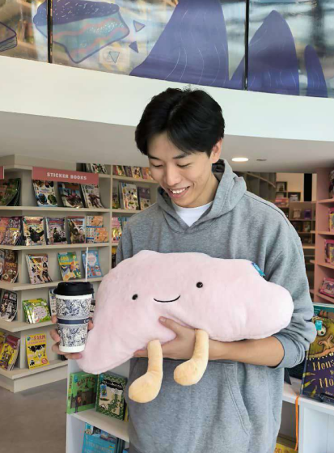

Restaurant
About Me
Promotion
History
Location

About Me
Hi there! I’m Dave, the food blogger behind this blog. I have an insatiable curiosity for foods from different
cultures and global cuisines and my passion lies in exploring the exciting flavors, traditions and stories
behind every page. From bustling street markets in Seoul to cozy, family-owned restaurants in Italy, I am always
on the hunt for the next unforgettable bite.
How it all started
My love for food began at a young age, growing up in a home where the kitchen was the heart of the house. Over
the years, my passion for cooking and trying new flavors evolved into a deep appreciation for cultural cuisines.
After traveling to different countries and experiencing firsthand how food connects people across cultures, I
decided to create this blog to share my journey.
What you’ll find here
This blog is a space where i document my food adventures - whether its reviewing hidden gems in local
neighbourhoods or sharing insights about the cultural significance of different dishes. If you’re a foodie with
a taste for adventure, you’re in the right place. Lets explore the world one bite at a time. Follow me on social
media or subscribe to my newsletter for the latest updates on my food discoveries.